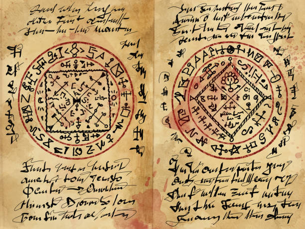
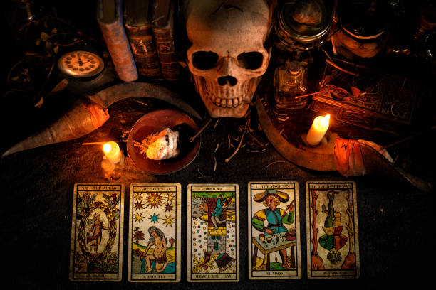
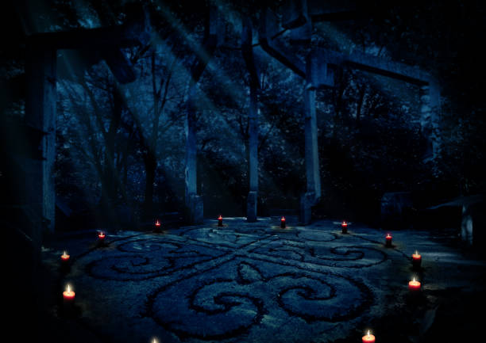
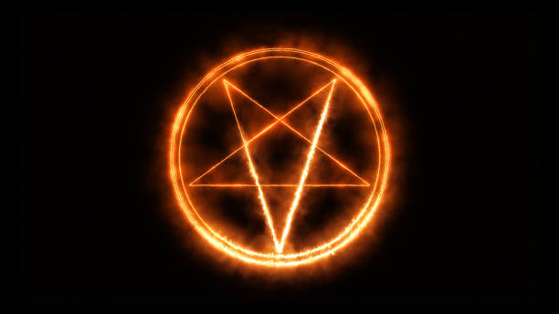
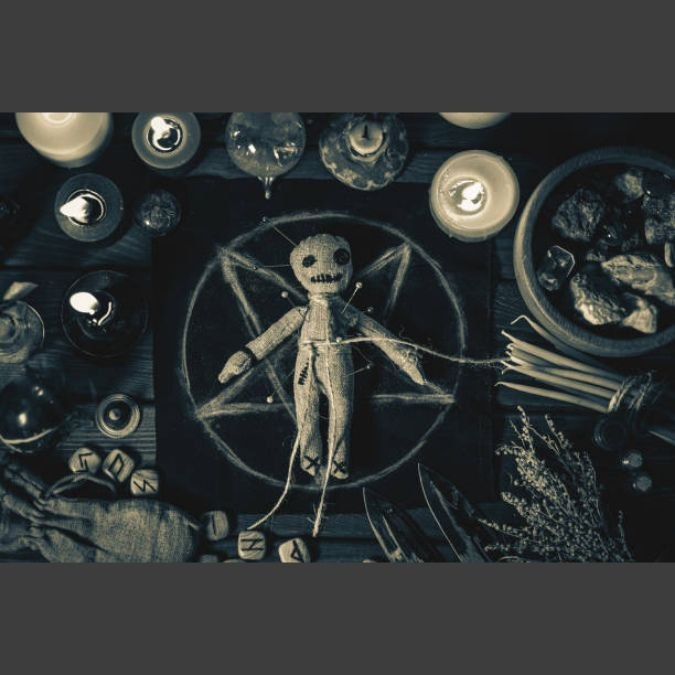
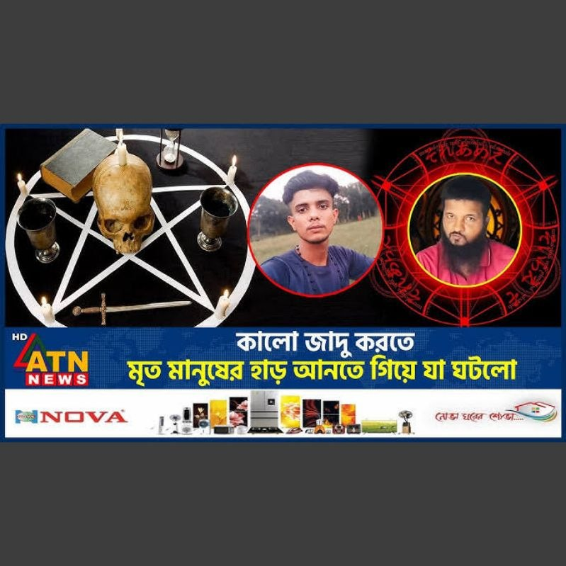

অদৃশ্য জগতের দরজা খুলছে...
Academic Research Project · 2026
কুফরি · তাবিজ · বান · সিহর
وَمَا يُعَلِّمَانِ مِنْ أَحَدٍ حَتَّىٰ يَقُولَا إِنَّمَا نَحْنُ فِتْنَةٌ
ইসলামিক দৃষ্টিভঙ্গি, বৈজ্ঞানিক বিশ্লেষণ, মনস্তাত্ত্বিক ব্যাখ্যা ও সামাজিক প্রভাবের আলোকে একটি সামগ্রিক গবেষণামূলক প্রকল্প।
ভূমিকা

কালো যাদু (Black Magic / Sihr / سحر) মানব সভ্যতার প্রাচীনতম বিশ্বাস-ব্যবস্থার একটি। এটি এমন একটি অনুশীলন যেখানে অদৃশ্য শক্তি, আত্মা বা অশুভ সত্তার সাহায্যে অন্যের ক্ষতি করার বা নিজের লাভের উদ্দেশ্যে কাজ করা হয় বলে বিশ্বাস করা হয়।
কুফরি শব্দটি ইসলামিক পরিভাষায় আল্লাহর অস্বীকৃতি বা শিরকের সাথে সম্পর্কিত অনুশীলনকে বোঝায়।
জিন (Jinn / جن) হলো আল্লাহর সৃষ্ট অদৃশ্য সত্তা যারা আগুনের শিখা থেকে তৈরি। কুরআনে একটি সম্পূর্ণ সূরা (আল-জিন, ৭২) তাদের নিয়ে অবতীর্ণ হয়েছে।
বাংলাদেশ ও ভারতীয় উপমহাদেশে "ওঝা", "ফকির", "কবিরাজ" নামে পরিচিত ব্যক্তিরা সিহর বা যাদুর দাবিদার। বিভিন্ন সমীক্ষায় দেখা গেছে, শহর ও গ্রামের প্রায় ৪৫-৬০% মানুষ কোনো না কোনোভাবে এই বিশ্বাসের সাথে পরিচিত।
পূর্ববর্তী গবেষণা বিশ্লেষণ
"এবং তারা অনুসরণ করেছে যা শয়তানরা সুলাইমানের রাজত্বে পাঠ করত। সুলাইমান কুফর করেননি, বরং শয়তানরাই কুফর করেছিল — তারা মানুষকে যাদু শেখাত।"
— সূরা আল-বাকারাহ, ২:১০২
কুরআনুল কারিমে সিহরের উল্লেখ বহুবার এসেছে। সূরা আল-ফালাক (১১৩) ও সূরা আন-নাস (১১৪) সরাসরি যাদুর ক্ষতি থেকে আশ্রয় চেয়ে অবতীর্ণ। সহিহ বুখারি ও মুসলিমে যাদুর বাস্তবতা স্বীকার করা হয়েছে।
"السحر حق، ويُقتل ساحره" — যাদু বাস্তব, এবং যাদুকরের শাস্তি মৃত্যুদণ্ড।
— ইমাম মালিক (রহ.), আল-মুওয়াত্তা
ইবনে তাইমিয়া (রহ.) তাঁর "মজমুআ আল-ফাতাওয়া"-তে বিস্তারিত আলোচনা করেছেন যে সিহর শয়তানের সহযোগিতায় হয় এবং এটি কুফরি।
James George Frazer-এর "The Golden Bough" (১৮৯০) যাদু ও ধর্মের সম্পর্ক বিশ্লেষণ করে। Bronisław Malinowski দেখিয়েছেন, যাদু মানুষ তখনই করে যখন সে নিজেকে অসহায় মনে করে।
বাংলাদেশ ও দক্ষিণ এশিয়ার প্রেক্ষাপটে ইসলামিক ও বৈজ্ঞানিক উভয় দৃষ্টিভঙ্গি একত্রে পরীক্ষা করা গবেষণা অত্যন্ত সীমিত।
ধারণাগত কাঠামো
আরবি "سحر" (সিহর) শব্দের আক্ষরিক অর্থ "যা গোপনে কাজ করে"। কুরআনে এটি হারুত ও মারুতের গল্পে উল্লেখিত।
কুফর মানে আল্লাহকে অস্বীকার বা আল্লাহ ছাড়া অন্যের কাছে সাহায্য চাওয়া। যাদু অনুশীলন তখন কুফরে পরিণত হয়।
জিন আল্লাহর সৃষ্ট এক অদৃশ্য সত্তা, আগুনের ধোঁয়াবিহীন শিখা থেকে তৈরি। কুরআনের সূরা আল-জিন (৭২) সম্পূর্ণরূপে জিনদের বিষয়ে।
জিনের আছর: জিন মানুষের শরীরে প্রবেশ করে — ইসলামি দৃষ্টিতে সত্য। চিকিৎসা রুকইয়াহ শারইয়্যাহ।
সব "যাদু"-র দাবি সত্য নয়। অনেক ক্ষেত্রে Nocebo Effect, Mass Hysteria বা সরাসরি প্রতারণা কাজ করে।
কুরআনি তাবিজ: আলেমদের মতভেদ আছে। শিরকি তাবিজ: সর্বসম্মতিক্রমে হারাম ও শিরক।
ঐতিহাসিক প্রেক্ষাপট

| সভ্যতা | যাদুর নাম | বিশেষত্ব |
|---|---|---|
| মিশর | হেকা | দেবতা-নির্ভর |
| ব্যাবিলন | Maqlû | প্রতিরোধমূলক |
| ভারত | তন্ত্র | দেহ-মন-বিশ্ব |
| ইউরোপ | Witchcraft | চুক্তি-নির্ভর |
| আরব | সিহর | শয়তানি সাহায্য |
ধর্মীয় দৃষ্টিভঙ্গি
"এবং গ্রন্থিতে ফুঁদানেওয়ালীদের অনিষ্ট হতে।"
— সূরা আল-ফালাক, ১১৩:৪
"مَنْ عَقَدَ عُقْدَةً ثُمَّ نَفَثَ فِيهَا، فَقَدْ سَحَرَ"
— সহিহ মুসলিম, হাদিস নং ২১৮৯
ইসলামি শরিয়াহয় সিহর সুস্পষ্টভাবে হারাম এবং বড় কবিরা গুনাহর অন্তর্ভুক্ত। রাসুলুল্লাহ ﷺ বলেছেন — "সাতটি ধ্বংসকারী কাজ থেকে বিরত থাক" — এর মধ্যে যাদু দ্বিতীয়।
নবী ﷺ-এর উপর যাদু: লাবিদ ইবনুল আ'সাম নামক ইহুদি নবী করীম ﷺ-এর উপর সিহর করেছিল। এই ঘটনা সহিহ বুখারিতে বর্ণিত।
যাদুর প্রতিকার — রুকইয়াহ শারইয়্যাহ: কুরআনের নির্দিষ্ট আয়াত পাঠ করে যাদু ভাঙা যায়।
"বলুন, আমার কাছে প্রত্যাদেশ হয়েছে যে, জিনদের একটি দল মনোযোগ দিয়ে শুনেছে।"
— সূরা আল-জিন, ৭২:১
তন্ত্রশাস্ত্রে "ষটকর্ম" — মারণ, উচ্চাটন, স্তম্ভন, বশীকরণ, মোহন ও শান্তি বর্ণিত। অথর্ববেদে শত্রু নাশের মন্ত্র রয়েছে।
বাইবেল: "Thou shalt not suffer a witch to live" — Exodus 22:18।
কাব্বালা: ইহুদি রহস্যবিদ্যায় "Goetia" — ডেমন তলব করার পদ্ধতি বর্ণিত।
ধরন ও প্রক্রিয়া
এই অধ্যায়ে শুধুমাত্র ধারণাগত ও গবেষণামূলক বর্ণনা রয়েছে। কোনো যাদু অনুশীলনের নির্দেশনা প্রদান এই গবেষণার উদ্দেশ্য নয়।
লক্ষ্যবস্তুর সাথে সাদৃশ্যপূর্ণ জিনিস ব্যবহার করা হয়। বৈজ্ঞানিকভাবে অপ্রমাণিত।
"বান মারা" — বাংলাদেশে সবচেয়ে পরিচিত ধারণা। ইসলামে "আমালুস সিহর"-এর অন্তর্ভুক্ত।
ইসলামে "সিহরুল মাহাব্বাহ" নামে পরিচিত — সম্পূর্ণ হারাম।
জিনের শরীরে প্রবেশের ধারণা ইসলামে স্বীকৃত। মনোরোগ বিশেষজ্ঞরা "Dissociative Identity Disorder" বলে ব্যাখ্যা করেন।
"আল-আইন" ইসলামে সত্য বলে স্বীকৃত। হাদিস: "العين حق" (সহিহ বুখারি ৫৭৪০)।
ইসলামে সম্পূর্ণ হারাম কারণ এতে অবশ্যই শয়তানি সহায়তা জড়িত।
মনস্তাত্ত্বিক বিশ্লেষণ

"যাদু কাজ করল" — এই বিশ্বাস নিজেই কাউকে সুস্থ বোধ করাতে পারে। Placebo পিল ৩০-৪০% ক্ষেত্রে ব্যথা কমায়।
"আমার উপর যাদু হয়েছে" — এই বিশ্বাস মানসিক চাপ, ঘুমের সমস্যা, দুর্বলতা তৈরি করতে পারে।
Mass Psychogenic Illness — একদল মানুষ একই মানসিক লক্ষণ দেখায় যার কোনো জৈবিক কারণ নেই। বাংলাদেশের মাদ্রাসায় "জিনের আছর"-এর সমষ্টিগত ঘটনাগুলো অনেক ক্ষেত্রে এটি।
Dissociative Identity Disorder (DID): একজন ব্যক্তির মধ্যে একাধিক ব্যক্তিত্ব — যা "জিনের আছর" বলে ভুল করা হয়। DSM-5 অনুযায়ী চিকিৎসাযোগ্য।
বৈজ্ঞানিক বিশ্লেষণ
James Randi-র $1 মিলিয়ন চ্যালেঞ্জে ১০০০+ দাবিদার পরীক্ষা দিয়েছেন — কেউ উত্তীর্ণ হননি।
Temporal Lobe Epilepsy ধর্মীয় অভিজ্ঞতা তৈরি করতে পারে। Sleep Paralysis অনেক "জিনের আছর"-এর ব্যাখ্যা।
Cold Reading, Hot Reading, Barnum Effect — "তোমার উপর কেউ ঈর্ষা করছে" সবার ক্ষেত্রেই প্রযোজ্য।
যাদু কাজ করলে মনে রাখি, না করলে ভুলে যাই। ৫০% মানুষ এমনিতেই সুস্থ হয়।
ভুডু যাদুতে Tetrodotoxin ব্যবহার। অনেক "যাদুর খাবার"-এ হ্যালুসিনোজেনিক উদ্ভিদ থাকে।
বিজ্ঞান কালো যাদুকে প্রমাণিত মনে করে না। তবে বিশ্বাস শারীরিক ও মানসিক প্রভাব ফেলতে পারে।
বাস্তব ঘটনা বিশ্লেষণ
মদিনায় লাবিদ ইবনুল আ'সাম নবী ﷺ-এর চুল ও চিরুনি দিয়ে যাদু করেছিল। জিবরাইল (আ) সূরা ফালাক ও নাস নাজিল করেন।
📚 সহিহ বুখারি: ৩২৬৮; সহিহ মুসলিম: ২১৮৯
ইসলামিক দৃষ্টিতে: সত্য ও বিশ্বাসযোগ্য২০+ মানুষকে ডাইনি অভিযোগে মৃত্যুদণ্ড। পরে Ergotism ও Mass Hysteria বলে নিশ্চিত।
বৈজ্ঞানিক: Mass Hysteria + Ergotismপ্রথম আলো ও ডেইলি স্টার-এর রিপোর্টে যাদু ছাড়ানোর নামে লক্ষ লক্ষ টাকা আদায়ের ঘটনা।
রায়: সুস্পষ্ট প্রতারণা ও অপরাধ১৬ বছরের মেয়ে আরবি বলা শুরু করে। পরে Dissociative Identity Disorder নির্ণয়। উভয় চিকিৎসায় উপকার।
দ্বৈত ব্যাখ্যা: ধর্মীয় + মনোরোগফেনী, বাংলাদেশ — আধ্যাত্মিকতার আড়ালে এক অন্ধকার সাম্রাজ্য
চট্টগ্রাম বিভাগের ফেনী জেলায় এক ভন্ড কবিরাজের প্রতারণার জাল বিস্তৃত হয়েছে। জনশ্রুতিতে তিনি "আলী হুজুর" নামে পরিচিত। আধ্যাত্মিক শক্তি এবং ভবিষ্যৎ বলার প্রলোভন দেখিয়ে তিনি দীর্ঘ দিন ধরে সাধারণ মানুষকে প্রতারিত করে আসছেন।
আলী হুজুরের প্রধান অস্ত্র হলো মানুষের মনস্তত্ত্ব নিয়ে খেলা করা। স্থানীয়দের মতে, তিনি মানুষের অতীত ও বর্তমান এমন নিখুঁতভাবে বলে দেন যে, সাধারণ মানুষ তাকে 'ঈশ্বরপ্রদত্ত' ক্ষমতার অধিকারী মনে করতে শুরু করে।
এই অন্ধবিশ্বাস এতটাই প্রকট যে, গ্রামের সাধারণ মানুষ ধর্মীয় মূল্যবোধ ভুলে গিয়ে এই ব্যক্তিকে অন্ধভাবে অনুসরণ করছে।
আলী হুজুর নিজেকে নিরাপদ রাখতে মানুষের মনে ভয়ের সংস্কৃতি গেঁথে দিয়েছেন। ব্ল্যাক ম্যাজিক বা কালো জাদুর ভয় দেখিয়ে তিনি অবাধ্যদের শায়েস্তা করার হুমকি দেন।
এই 'ইলুমিনাতি' স্টাইল প্রতারণার কারণে ফেনীর শহর অঞ্চলেও এখন তার প্রভাব ছড়িয়ে পড়ছে। একটি স্বচ্ছল ও শান্তিপূর্ণ সমাজকে কুরে কুরে খাচ্ছে এই ভন্ডামি।
এই চক্রের প্রধান লক্ষ্য থাকে প্রবাসীদের পরিবার। বিশেষ করে ঘরের নারী সদস্যদের বশীকরণের মাধ্যমে কবজায় নেওয়া হয়।
ধর্মের লেবাসধারী এই ধরনের অপরাধীদের হাত থেকে সাধারণ মানুষকে বাঁচাতে প্রয়োজন সামাজিক আন্দোলন এবং প্রশাসনের কঠোর নজরদারি।
বিশ্বাস যেন কখনও অন্ধত্বের পর্যায়ে না যায় — ফেনীর এই ঘটনা তারই জীবন্ত সতর্কবার্তা।
অলৌকিকতার আড়ালে লুকিয়ে থাকা বিজ্ঞানের সূত্রসমূহ
হাতে ঘষা দিয়ে ধোঁয়া তোলা — সাধারণত সাদা ফসফরাস বা গ্লিসারিন ও পটাশিয়াম পারম্যাঙ্গানেট মিশলে ধোঁয়া সৃষ্টি হয়। এটি রসায়নের প্রাথমিক পর্যায়ের বিক্রিয়া।
মানুষের চেহারার অভিব্যক্তি, পোশাক দেখে সাধারণ অনুমান। যখন মিলে যায়, মানুষ অবাক হয় — এটি Confirmation Bias বা কনফার্মেশন পক্ষপাত।
চেলারা আগে থেকেই ভুক্তভোগীর তথ্য সংগ্রহ করে জানায়। হুজুর সেটাকে 'কাশফ' বা অলৌকিক জ্ঞান হিসেবে উপস্থাপন করেন।
আলী হুজুরের কর্মকাণ্ড ইসলামিক দৃষ্টিতে
"আসমান ও যমীনে আল্লাহ ব্যতীত আর কেউ গায়েবের খবর জানে না।" — যারা ভবিষ্যৎ বলার দাবি করে, তারা ইসলাম থেকে বিচ্যুত।
"যে ব্যক্তি কোনো গণক বা জ্যোতিষীর কাছে গেল এবং সে যা বলল তা বিশ্বাস করল, সে যেন মুহাম্মাদের ওপর যা নাযিল হয়েছে তাকে অস্বীকার করল।"
মানুষের অসহায়ত্বকে পুঁজি করে যাদু-টোনার নামে অর্থ আত্মসাৎ করা ইসলামে সম্পূর্ণ নিষিদ্ধ ও হারাম। এটি কবিরা গুনাহ এবং শিরকের অন্তর্ভুক্ত।
কোনো অলৌকিকতা দেখলেই বিভ্রান্ত না হয়ে তার পেছনে লুকিয়ে থাকা ধূর্ততা বোঝার চেষ্টা করুন।
যেকোনো সমস্যায় ভন্ড কবিরাজের কাছে না গিয়ে আল্লাহর কাছে দোয়া করুন। বিজ্ঞ আলেমের পরামর্শ নিন।
এ ধরনের প্রতারক চক্রের তথ্য পাওয়া মাত্রই স্থানীয় থানায় GD করুন বা পুলিশকে জানান।
বিশেষ করে প্রবাসী পরিবারের নারী সদস্যদের এই ধরনের প্রতারণা সম্পর্কে সতর্ক করুন।
আইনগত দৃষ্টিভঙ্গি
| ধারা | বিষয় | শাস্তি |
|---|---|---|
| ৪১৫ | প্রতারণা | ১ বছর |
| ৪২০ | প্রবঞ্চনা | ৭ বছর |
| নারী ও শিশু আইন | যাদুর নামে নির্যাতন | মৃত্যুদণ্ড পর্যন্ত |
সৌদি আরব: সিহর সরাসরি ফৌজদারি অপরাধ — মৃত্যুদণ্ড পর্যন্ত।
ভারত: Witch Hunting Prevention Acts প্রণীত।
যাদুর নামে প্রতারণার শিকার হলে নিকটস্থ থানায় GD করুন।
নৈতিক দিকসমূহ
অসহায় মানুষের ধর্মীয় বিশ্বাস ও ভয়কে কাজে লাগিয়ে মানসিক ও আর্থিক শোষণ।
"তোমার উপর যাদু হয়েছে" — এই কথায় দীর্ঘমেয়াদী ট্রমা তৈরি হয়।
ডাইনি সন্দেহ সর্বত্র নারীদের বেশি আক্রান্ত করে — এটি মূলত সামাজিক শোষণের হাতিয়ার।
কিছু TV চ্যানেল "জিনের আছর"-এর ভিডিও সম্প্রচার করে যা Mass Hysteria বৃদ্ধিতে ভূমিকা রাখে।
ইসলামে "লা ধারার ওয়ালা দিরার" — নিজের ও অন্যের ক্ষতি করা নিষিদ্ধ।
কোনো ব্যক্তির ধর্মীয় বিশ্বাসকে উপহাস না করা এবং Anonymity নিশ্চিত করা আবশ্যক।
ঝুঁকি ও সতর্কতা
সকাল-সন্ধ্যার আযকার
আয়াতুল কুরসি, সূরা ইখলাস, ফালাক ও নাস — ৩ বার
ঘুমানোর আগে
হাতে ফুঁ দিয়ে সারা শরীরে বুলানো এবং আয়াতুল কুরসি পাঠ
যাদুর সন্দেহে
বিশ্বস্ত আলেমের কাছে যান — বিনামূল্যে রুকইয়াহ করান।
সামগ্রিক আলোচনা
ইসলাম যাদুকে বাস্তব হিসেবে স্বীকার করে এবং সুরক্ষার পদ্ধতি দেয়। বিজ্ঞান যাদুকে অতিপ্রাকৃত হিসেবে প্রমাণিত মনে করে না, কিন্তু মানসিক প্রভাব অস্বীকার করে না।
"যে ব্যক্তি রাতে সূরা বাকারার শেষ দুটি আয়াত পড়বে, সেগুলো তার জন্য যথেষ্ট হবে।"
— সহিহ বুখারি, হাদিস নং ৫০০৯
ইসলাম যাদুর অস্তিত্ব স্বীকার করে কিন্তু অনুশীলন সম্পূর্ণ নিষিদ্ধ করে
অধিকাংশ "যাদু শিকার" আসলে মানসিক রোগ বা প্রতারণার ভুক্তভোগী
যেকোনো অর্থ-আদায়কারী "ওঝা" প্রতারক — পুলিশে যান

উপসংহার
"এবং তারা আল্লাহর অনুমতি ব্যতীত কারো ক্ষতি করতে পারে না।"
— সূরা আল-বাকারাহ, ২:১০২
এই গবেষণা থেকে স্পষ্ট হয় যে কালো যাদু, সিহর ও জিনের বিষয়টি একটি বহুমাত্রিক ঘটনা। ইসলামিক দৃষ্টিতে সিহর বাস্তব ও ক্ষতিকর; বিজ্ঞান অধিকাংশ ঘটনা মনস্তাত্ত্বিক ও সামাজিক কারণে ব্যাখ্যা করে।
মূল বার্তা: আল্লাহর উপর তাওয়াক্কুল রাখুন, নিয়মিত আযকার পাঠ করুন, প্রতারকদের থেকে দূরে থাকুন।
সুপারিশমালা
তথ্যসূত্র ও পরিশিষ্ট
চিত্র সংগ্রহ


Social Impact
সামাজিক প্রভাব
গ্রামীণ সমাজে প্রভাব
বাংলাদেশের গ্রামাঞ্চলে অসুস্থতা বা দুর্ঘটনাকে "যাদুর কারণে" মনে করার প্রবণতা ব্যাপক। এই বিশ্বাস প্রায়ই সঠিক চিকিৎসা গ্রহণে বাধা দেয়।
ভুয়া ওঝা প্রতারণা
প্রথমে ভয় তৈরি করে, তারপর টাকার বিনিময়ে সমাধান দেয়। সর্বোচ্চ প্রতারণা: "তোমার ছেলে মারা যাবে — লক্ষ টাকা দাও।"
যেকোনো ব্যক্তি যদি যাদু "ধরিয়ে দেওয়া" বা "ছাড়ানোর" জন্য অর্থ দাবি করেন — তিনি একজন প্রতারক।